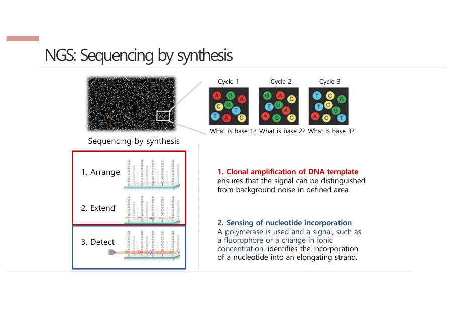

NGS가 읽는 원리 — SBS (Sequencing by Synthesis)
SBS는 "합성하면서 읽는다"는 뜻이에요. 두 단계로 기억하세요.
첫째, 클론 증폭(Clonal amplification)이에요. DNA 한 가닥이 내는 빛은 너무 약해서 사진에 안 잡혀요. 그래서 같은 조각을 약 1,000개로 복사해 한 점에 모아 빛을 키워요. 이 한 점을 클러스터(cluster)라고 해요.
혼자 손전등을 켜면 멀리서 안 보여요. 그래서 같은 반 친구 1,000명이 한곳에 모여 동시에 켜는 거예요.
둘째, 글자 붙이며 감지(Sensing)예요. 한 사이클(한 바퀴)마다 글자 하나를 붙이고 형광 사진을 한 장 찍어요. 글자마다 빛 색이 달라서 색을 보면 무슨 글자인지 알아요. 이 바퀴를 약 150번 돌려요.
같은 점의 색을 사진마다 이어서 읽으면 그 조각의 글자 순서가 나와요. 아래 표에서 점 ①은 1회 A, 2회 C, 3회 G, 4회 T라서 ACGT…로 읽혀요.
사이클마다 사진 한 장 → 같은 점의 색을 이어 읽으면 서열
| 1회 | 2회 | 3회 | 4회 | 읽은 결과 | ||
| 점 ① | A | C | G | T | ACGT… | |
| 점 ② | G | G | A | C | GGAC… | |
| 점 ③ | T | A | A | G | TAAG… |
글자마다 형광 색이 달라서 사진 색으로 글자를 알아요 (색은 설명용)
운동장의 수억 개 전구가 한 번 켜질 때마다 색이 달라요. 드론이 매번 사진을 찍어 두면, 전구마다 "빨강, 초록, 파랑…" 하는 색 순서가 곧 그 조각의 글자 순서예요.
왜 150번쯤에서 멈출까요. 사이클을 반복할수록 먼지나 형광 물질이 끼어 점이 지저분해지고, 색을 헷갈리는 잡음이 쌓이기 때문이에요. 그래서 한 번에 읽는 길이가 짧아요.

SBS는 두 단계로 이루어진다. 먼저 클론 증폭으로 같은 DNA 약 1,000개를 한 클러스터에 모아 형광 신호를 키운다. 이후 사이클마다 염기 하나를 합성하며 형광을 이미징하고, 이를 약 150회 반복해 각 클러스터의 염기서열을 얻는다.
잠깐 확인 — 같은 조각을 약 1,000개로 복사해 한 점에 모으는 이유는 무엇인가요?
DNA 한 가닥의 형광은 너무 약해서, 같은 조각을 모아 신호를 키워야 사진에 잡히기 때문이에요.